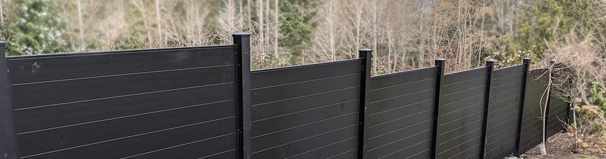
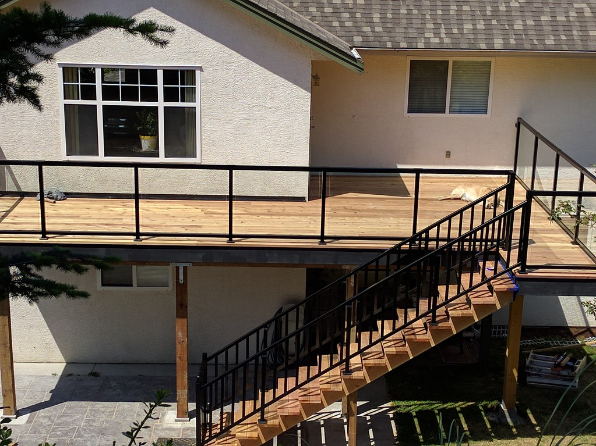
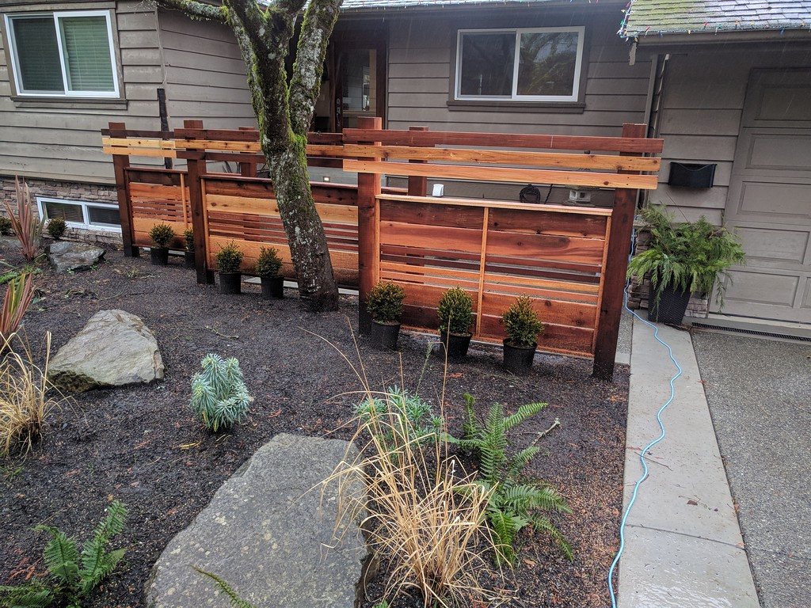
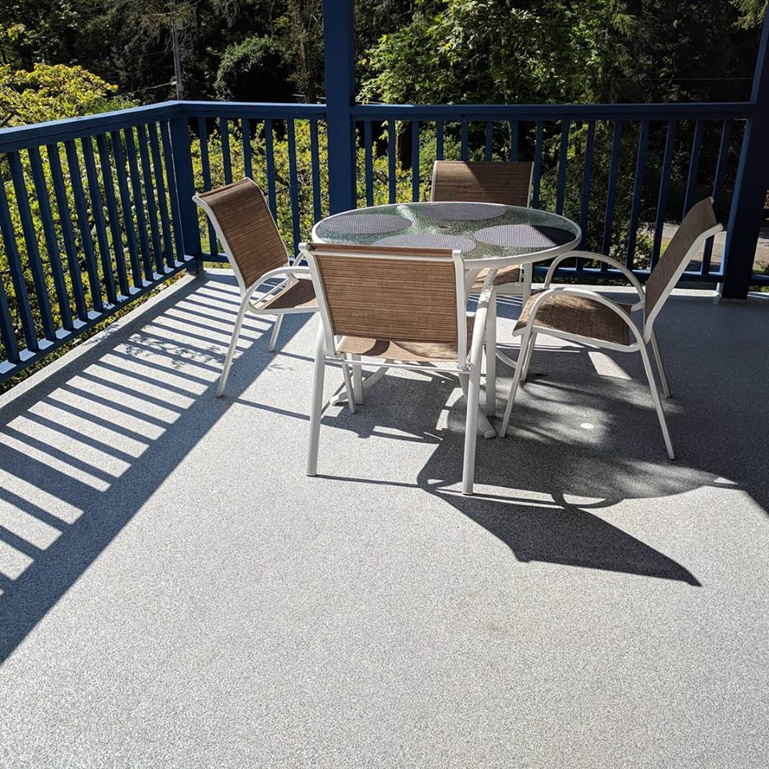
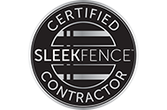

Deer and wildlife pressure
Fencing that protects gardens while keeping the yard usable and good-looking.
Miller Fence & Deck builds cedar, metal, SLEEKFENCE, gate, deck, waterproofing, and railing projects across Greater Victoria and Vancouver Island.



Fence and deck projects go better when the first conversation is about use, not just materials. The right answer changes if you are keeping deer out, pets in, neighbors screened, or water off a deck.
Fencing that protects gardens while keeping the yard usable and good-looking.
Cedar, aluminum, horizontal slat, black, and spaced-slat options for privacy without a heavy feel.
Fence and gate choices that help keep pets secure and access points clear.
Cedar, pressure treated, composite, waterproofing, drainage, and railing decisions built into one plan.
Replace splintering fences, aging rails, and tired decks with a cleaner long-term solution.

Miller’s published service pages cover classic wood fences, metal and chain-link work, modern horizontal systems, decks, waterproofing, and railings. The final choice should match the site, the budget range, and how the space will be used.
The contact form already asks for budget range. Bring a few more details and the first conversation gets sharper fast.
Garden protection, privacy, pet security, deck replacement, railing upgrade, waterproofing, or gate access.
Slope, drainage, old posts, existing rails, property edges, access, and material removal all matter.
Warm cedar, clean black horizontal slats, open glass, simple chain link, or a more ornamental edge.
The form gives four ranges: 0-5k, 5-10k, 10-20k, and 20k+.
The best testimonials are not vague praise. They mention budget, timing, clean work areas, helpful crews, and finished structures people trust.
“Professional and helpful throughout the process.”
Lee Anne C. · Fencing needs“Always on-time, professional, and cleaned up their work areas on a daily basis.”
Drew S. · Fence installation“Knowledgeable and professional throughout. Our second experience with them for fencing and railings.”
Malcolm H. · Fencing and railings“Work was performed within the estimated time frame. Deck is a solid structure.”
Cliff C. · Deck project
SLEEKFENCE identifies Miller as a trained contractor for its modern fence product.
Tell Miller what you are trying to solve, which materials you are considering, and what budget range the project might sit in. The next step is a no-obligation quote conversation.